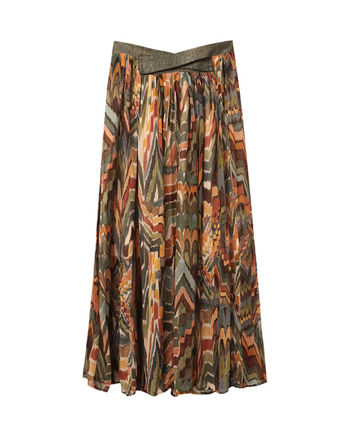

Il y a celles qui partent en vacances, celles qui sont prêtes à refaire la fête et n’attendent que ça avec impatience, celles qui travaillent en juillet et celles qui ne travaillent plus…
Et pour vous toutes, il y a ces 10 looks de l’été concoctés par nos Personal Shoppers pour que vous ne vous posiez même pas la question de comment s’habiller en juillet 2021.
Voici votre inspiration mode du mois, elle-même inspirée des profils de nos femmes Lookiero. En piste !
Look 1 : Votre propre rayon de soleil
Parce qu’il n’y a pas d’été sans retour de la robe longue dans les rues, nous vous proposons sa version la plus lumineuse pour un look rayonnant.
Notre coup de cœur du mois : la robe longue à manches ballon, dans un jaune bouton d’or ou carrément un illuminating yellow pour les plus aventurières.
Accessoirisez simplement avec votre plus beau chapeau de pailles et une paire d’espadrilles compensées, et en route pour la plage ou une garden party !
Look 2 : La douceur aérée du lin

Avec les fortes chaleurs de l’été, vous aurez besoin de vêtements qui respirent.
On ne parle pas de matières sportives et ultra-technologiques mais du tissu naturel, léger et souple, chouchou de l’été : le lin. Votre robe en lin à coupe fluide incarne non seulement le meilleur de cette saison mais elle reste toujours confortable.
Short en lin et chemise en lin sont évidemment les bienvenus dans vos looks de juillet. N’hésitez pas à créer votre total look dans cette matière aérée en matchant des tonalités naturelles pour un style estival élégant.
Puisqu’on vous parle de tonalités naturelles, puisez dans les tons de terre pour créer la base ce de look de juillet 2021.
On accorde ainsi un haut tout en simplicité et une jupe midi plissée avec un rappel de tons de terre à orangé. On adore l’imprimé géométrique, qui va ajouter du volume à la jupe.